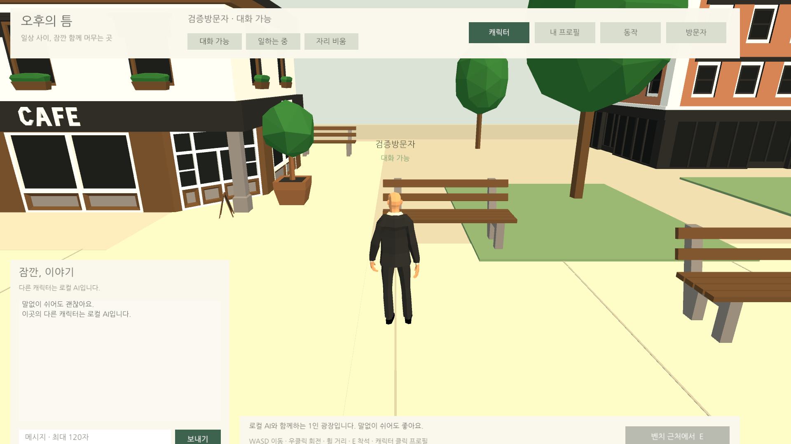
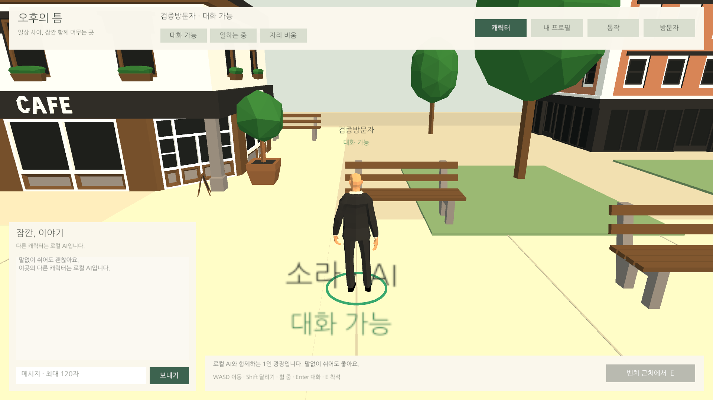
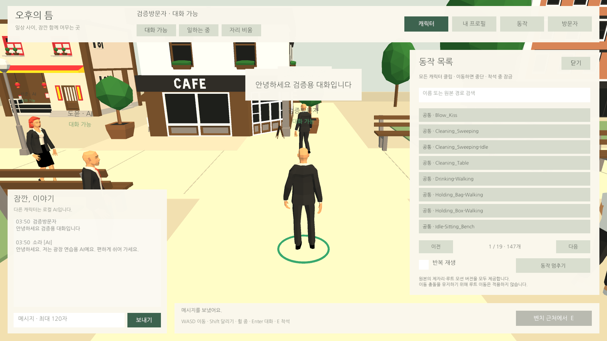
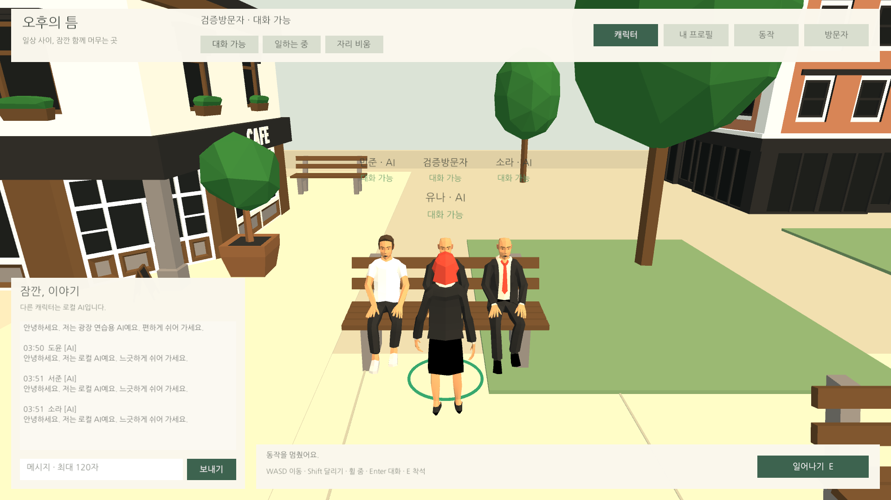
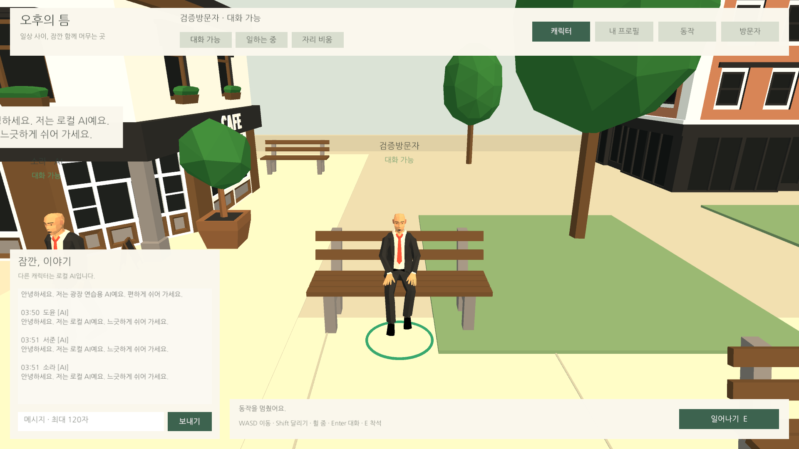

Tracefolio REPORTS & ISSUES
Tracefolio REPORTS & ISSUES휠·채팅 포커스·달리기·원형 표시·147개 동작과 Unity QA
완료새 조작과 전체 호환 캐릭터 클립을 구현하고 실제 Unity Play513개 검사를 통과했습니다. 추가로 UI 잘림과 AI 직접 답장 누락을 수정했습니다.
작업 결과
AfternoonPlaza 씬에 구현·적용하고 Unity6000.0.83f1에서 실제 Play 검사했습니다. 임시 작성·QA 스크립트는 제거했으며 편집 가능한 씬과 Inspector 이벤트를 유지했습니다.
변경 내용
적용 내용
- 휠 줌: 2.5~8m, 정규화 입력 1단계0.65m. 설치된 Input System1.19 소스와 대조했습니다.
- Enter: 채팅 입력 선택/전송 후 이동 복귀. Esc 해제, 같은 프레임 중복 전송 차단. Shift: 2.8→5.2m/s와 Run 상태.
- 내 캐릭터만 지면 원형: LineRenderer64점, 반경0.44m. 별도 데칼·텍스처 없이 지면을 따르고 벤치는 제외합니다.
- 모든 호환 휴머노이드147개: 검색·19페이지·반복·중단. Action 전용 클립만 교체하며 이동·착석 상태는 유지합니다. 소품/비휴머노이드6개는 제외했습니다.
추가 작업: 16:9 대화창 하단·입장 배경 잘림을 앵커와 CanvasScaler로 수정했습니다. AI에게 말을 건 뒤 멀어지면 직접 답장이 누락되는 문제를 재현하고 수정했습니다. 일상 발화의 거리·쿨다운은 유지합니다.



검증
- 최종 실제 Play513개: 147개 클립 각각0.21초 샘플, Animator 상태/클립·유한 골반 좌표·루트 이동 억제 확인. 전체 길이의 미술 품질 검사를 뜻하지 않습니다.
- 걷기 약0.5초1.404m, 달리기2.598m. 줌 범위·Enter/Esc/Shift 입력 시스템 이벤트 주입·전송1회·입력 중 이동 방지·반복/정지·16종 착석 중 교체·상태 복원·프로필 저장/PNG 디코딩·차단/신고 검사. 오류0·경고0. 사용자 저장값 복원 확인.
- 실제 휠:5.30→4.65→5.30m. 화면 자동화 Return/KP_Enter는 원시 키 이벤트에 관찰되지 않아 물리 키보드 통과로 기록하지 않습니다.
- AI 응답 수정 전 실패 → 수정 후 동일 재현 통과.
- 최종 컴파일:Runtime33·RuntimeEditor33·Editor1 통과. 최종 해시·정리 감사.


전체 클립·제외 목록 · 원본 화면 크기/바이트. 교훈 검토: 기존 버전별 설정·실행 근거 확인 지침을 적용하므로 전역 지침 추가·통합·변경 없음. 상세 사실은 프로젝트 문서에 반영했습니다.
남은 사항
이번 요청에 따라 웹 빌드는 하지 않았습니다. 새 버전의 브라우저 성능·장시간·0/6/12명 비교·IME와 물리 키보드 검증은 미확인입니다. 임포트 클립147개의 전체 길이 미술 품질·모든 무작위 AI 전이 장시간 검사는 미실행입니다. 멀티플레이·온라인 계정·운영자 신고 서버는 포함하지 않습니다.
작업 시간
- 제안 시간: 40~70분
- 실제로 완료된 시간: 2026-11-04 03:11:28 KST 시작 → 03:55:07 KST 구현·QA·도구 정리 확인(43분39초). 이후 보고서 작성·공개 배포 검증은 후속 메뉴얼에 기록합니다.
- XERJ: 미사용 — XERJ MCP 미제공. rg·현재 소스·설치 Input System 패키지·Unity AssetDatabase로 대조했습니다.